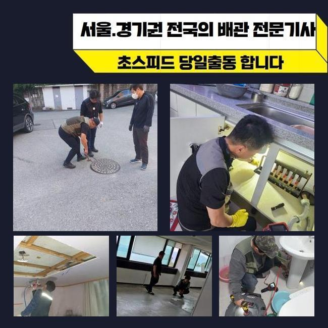
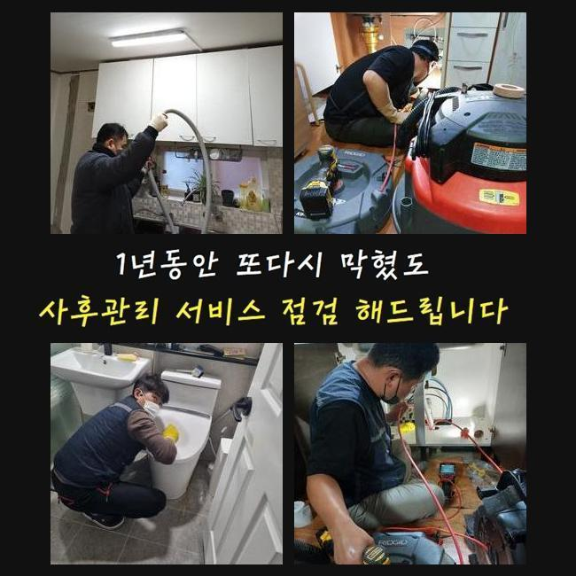
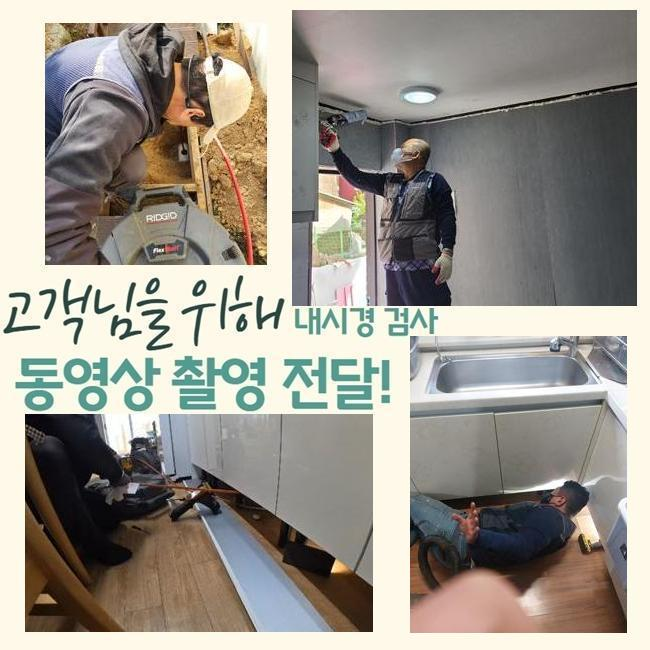
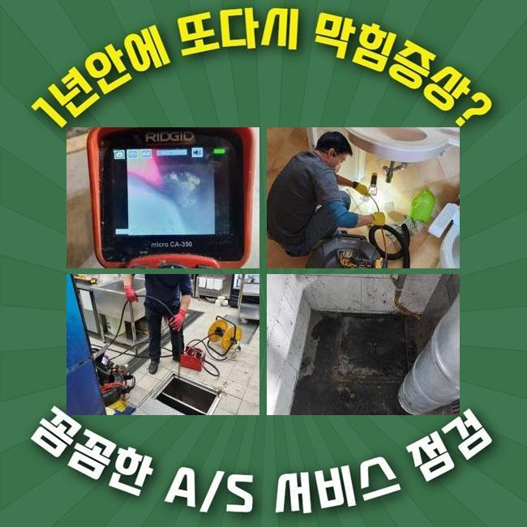
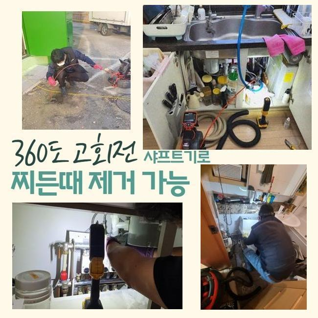
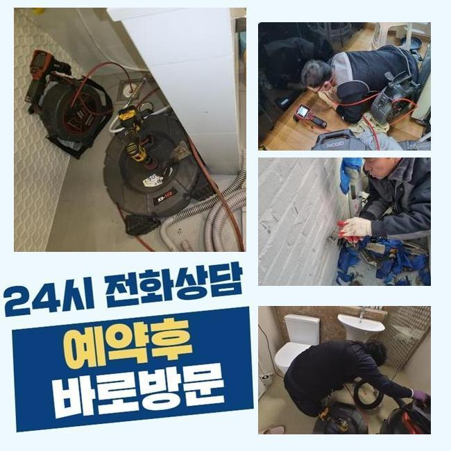

🏠 금정동씽크대배수구역류 대야동 배관내시경카메라 배관막힘누수업체
용인 싱크대막힘 전문 시공 후기

📋 작업 개요
- 위치: 용인
- 서비스 유형: 싱크대막힘, 하수구막힘, 배관막힘, 집수정막힘, 누수수리, 역류해결, 뚫는업체, 배관청소, 고압세척, 악취차단
- 작업 일시: 2025. 3. 3. 1:09
- 업체명: 하수구수사대 (010-5615-2118)
🔍 문제 상황
금정동씽크대배수구역류 대야동 배관내시경카메라 배관막힘누수업체
하수구가 막혔을때 가벼운 문제들로 끝난다면 문제없지만 방임할경우 2차문제들로 커질수가 있는데요
신속히 대응한다면 좋지만 혹여나 방치하고 계신다면 업체를통해 막힘증세를 처리하시는것이 좋겠습니다
이번장소는 상가시설인데 하수관이 막혀서 문의주셨죠
이러한일들이 발생되면 급급한 상황들이 대부분이니 1시간 안팎으로 방문드려요
상가시설안 식당쪽에서 막힘증상이 발현되었다고 하셨는데요
하루지나고 영업이 이루어져야 하므로 곤란해하시는 상황이었어요
막히게된 연유가뭔지 파악해내려고 서둘러서 움직였죠
식당외부와 주방내부를 점검한결과 트렌치부터 연결되어있는 메인관도 문제가있었죠
막힌상태를 의뢰자분에게 전달드리고나서 작업에 들어갔죠
하수구작업에 들어갈땐 반드시 고객님께 상황에대해 설명드리고있죠

🔎 원인 분석
💡 전문가 진단: 정밀 진단 장비를 사용하여 슬러지의 고착 여부를 판명하고 타격/세척 작업을 실시했습니다.
플렉스샤프트기로 안쪽에쌓인 오염물질들을 분쇄해주었죠
치킨집으로 운영되는 곳이다보니 기름들이 가득했어요
조심스레 작업하여 안속에 쌓인것들을 없애줬어요
작업을 진행하며 오염물제거가 깨끗히 진행되는지 내시경장비로 체크까지 해주었죠
역류하고있는 배수구였기에 가능한 서둘러서 파손이 발생되지않게 하수구청소를 진행했는데 또 다른 피해가없이 역류현상을 바로잡아서 안심할수가 있었습니다
바깥쪽을 작업해준뒤 주방내부로 장소를 옮겼어요
식당내부에 있는 싱크대배관이 막히게되어 하수구카메라를 써서 막힌이유에 대해 분석을 시작했답니다
점검해보니 기름이물이 쌓이면서 막히게된것으로 판단할수있었어요
석회물을 없애기위해 샤프트기를 써서 분해시켰어요
이다음엔 분쇄된 찌꺼기들을 석션기로 빨아들이는 작업으로 이물제거를 완료했죠
배관이 막히는것은 수 많은 원인을통해 발생되지만 가장 큰 이유로는 배관속에 이물이 유입되어 막히는것이 대부분이죠

🔧 작업 과정
그렇기때문에 음식물이나 기름기가 들어가지않도록 신경써야하고 정기적으로 하수구를 점검해 문제는 없는지 살펴봐야 한답니다
반복적인 스케일링을 통하여 트렌치관 내부에 쌓여있었던 기름이물과 메인관도 해결해냈어요
집수정쪽도 마찬가지로 막혀있는걸 알아냈죠 집수정특성상 석션기나 샤프트기로는 뚫는것은 쉽지않기에 고압청소기가 필요한 상황이었죠
사용하기전에 의뢰자에게 양해말씀을 드린뒤 고압세척을 진행해야하는 필요성과 관련하여 안내드렸어요
고압세척기는 강한압력의 물을 통하여 이용되기에 작업자가 주의하여 수리하는것이 필요하겠습니다
자칫하면 하수구내벽에 균열이생기며 2차피해로 연결될 가능성이 있어요
집수정안에 기름들이 가득차있어 높은 압력의 물을쏴서 많은 이물질들을 밀어내면서 제거해주었죠
안쪽과 바깥쪽을 전부 작업해보니 정상적인 배수상황으로 복구된것을 확인했어요
식당처럼 영업장소는 금전적인 피해를 입으시기 때문에 시간관계없이 빠르게 출동해드려요
씽크대배수구망 이라든지 악취차단 트랩을깔아 막힘현상과 악취문제를 예방할수있죠
확고한 해결책은 막힘현상을 발견하면 발견그즉시 전문인을 호출해 해결하는것이죠
재차 말씀드리지만 방치를 하신다면 물이새거나 역류하는 문제로 연결될수있어요
막힌하수구를 뚫어보려고 혼자서 직접 뚫는 시도를 해보셨을건데 간략하게 시도해볼수있는 방법들을 알려드려볼게요
온수나 배수구클리너를 적당량 사용해 배관에 부어부시고 그렇게 해서도 뚫리지않으면 전문가를 호출해 도움을 받아보셔야 한답니다
과하게 들이 붓는다면 하수구 손상문제가 일어날 확률도 있어 권장량으로 시도바랍니다
어느장소라도 하수도가 막히게되면 당황스러울 거에요
저희들의 경우에는 가정집과 음식점 다세대건물등 어떠한 장소든 방문할수 있어요


✅ 작업 완료
작업착수시 투명히 작업계획을 진행해주어야 신뢰할수 있을겁니다
현장상황을 우선 살핀후 뚫는비용과 관련해 자세히 일러드려요
현장상황에 따른 석션기계로만 해결된다면 5만원정도로 청구드리니 참고하세요!
하수구와 관련해 궁금한것들이 있으실경우 아무때나 전화주시면 꼼꼼한 응대로 도와드리겠습니다
막히는문제 방치마시고 조속한 대처로 손해를 줄이시길 바래요




⚠️ 베란다 누수 및 방수 관리 방법
- ✅ 비가 많이 올 때 창틀 주변이나 아래층 천장에 얼룩이 생기는지 정기적으로 확인해 보세요.
- ✅ 우수관 주변 실리콘 마감이 들뜨거나 깨진 틈새가 있는지 손상 여부를 수시로 체크하세요.
- ✅ 베란다 바닥 타일의 줄눈(메지)이 소실되면 그 틈으로 물이 침투하여 누수가 유발됩니다.
- ✅ 누수 의심 증상 발견 시 방치하면 아래층 손실이 커지므로 즉시 전문가의 진단을 받으십시오.
💡 핵심 정리
- 확실한 장비 작업(내시경 점검 및 샤프트 스케일링)으로 원인을 뿌리 뽑습니다.
- 작업 후 1년 이내에 동일한 부위 재발 시 100% 무상 A/S 서비스를 보장합니다.
- 서울 · 경기 · 인천 전 지역에 24시간 언제든 긴급 출동할 수 있도록 항시 대기 중입니다.
❓ 자주 묻는 질문 (FAQ)
🚨 용인 싱크대막힘 문제로 고민이신가요?
정확한 원인 진단과 확실한 시공으로 재발 없는 해결을 약속드립니다.
24시간 긴급 출동 | 서울 · 경기 · 인천 전지역 | 1년 내 재발 시 무상 A/S